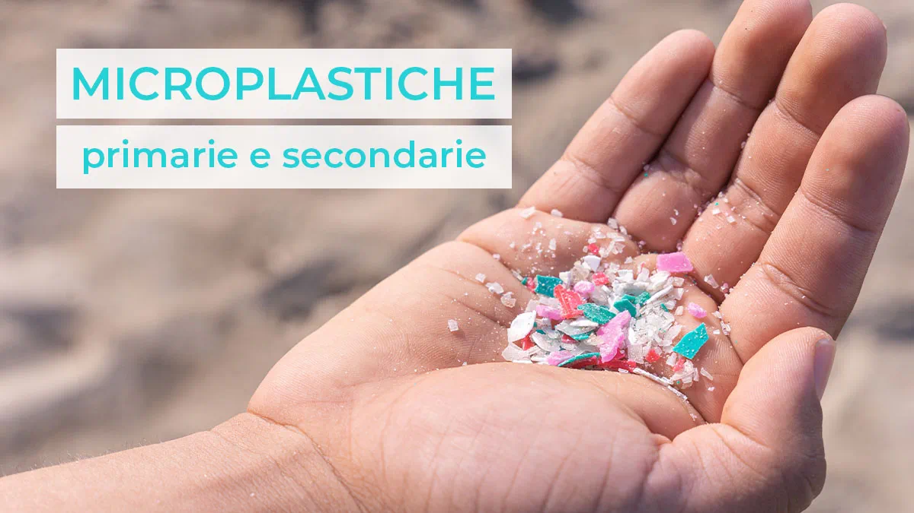
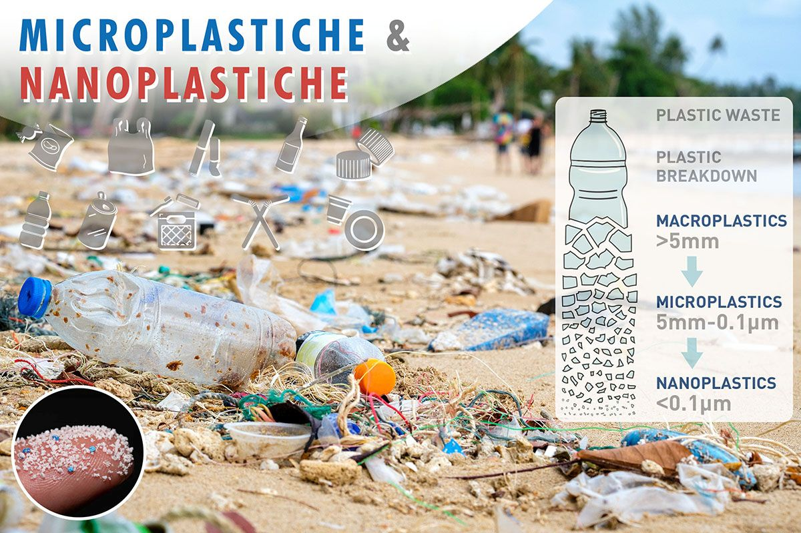
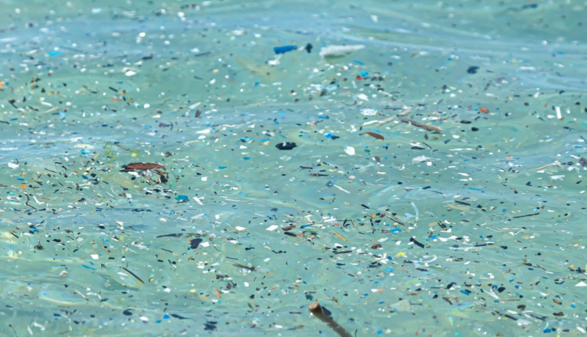
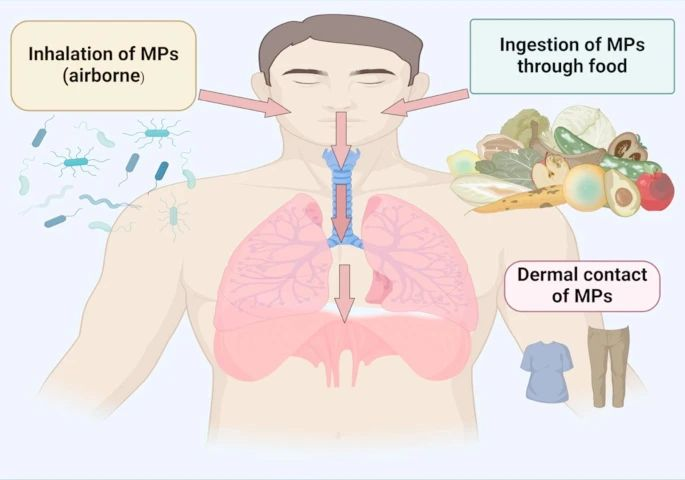
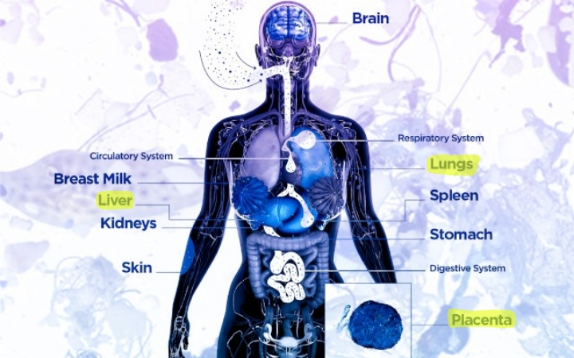
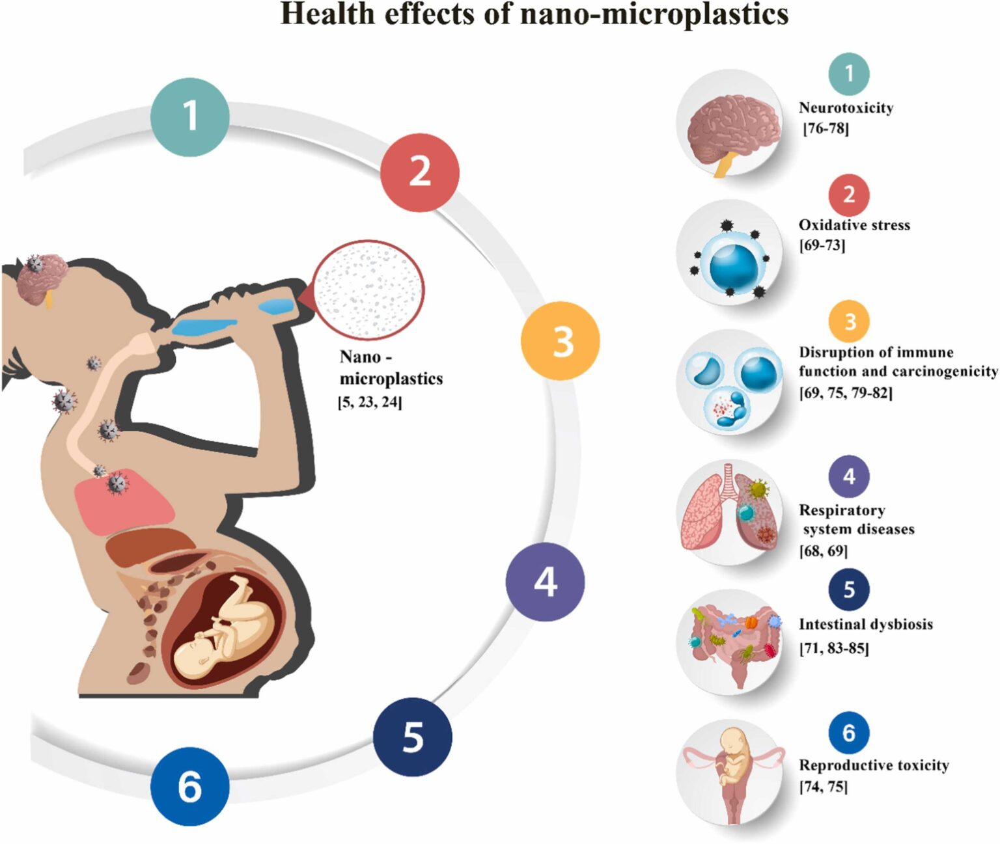

INTRODUZIONE
Le microplastiche sono frammenti di materiale plastico di dimensioni inferiori a 5 millimetri. Possono essere suddivise in due categorie principali:
microplastiche primarie, prodotte intenzionalmente già in forma microscopica (ad esempio nei cosmetici esfolianti o nei detergenti industriali), e
microplastiche secondarie, derivanti dalla frammentazione di oggetti plastici più grandi a causa di processi fisici, chimici e biologici come l’esposizione
ai raggi ultravioletti, l’azione delle onde o l’usura meccanica.

Origine e diffusione ambientale
Le microplastiche sono oggi presenti praticamente ovunque: negli oceani, nei suoli, nell’aria e persino in ambienti remoti come le regioni polari.
Fonti comuni includono:
- Degradazione di rifiuti plastici (bottiglie, sacchetti, imballaggi).
- Fibre sintetiche rilasciate durante il lavaggio dei tessuti.
- Abrasione degli pneumatici.
- Polveri industriali.


A causa della loro dimensione ridotta e della loro resistenza alla degradazione, queste particelle possono essere facilmente trasportate da acqua
e vento, entrando nei cicli biogeochimici globali.
Vie di ingresso nell’organismo umano
Le microplastiche possono entrare nell’organismo umano attraverso tre principali vie:
- Ingestione
È la via più comune. Le microplastiche sono state rilevate in acqua potabile, sale marino, pesce, molluschi e persino in alimenti di uso quotidiano.
Una volta ingerite, possono attraversare il tratto gastrointestinale. Le particelle più piccole (nanoplastiche, 1 µm) hanno maggiore probabilità di
attraversare la barriera intestinale ed entrare nel flusso sanguigno.
- Inalazione
Le microplastiche sospese nell’aria, specialmente in ambienti urbani o indoor, possono essere inalate. Le particelle più piccole
possono raggiungere gli alveoli polmonari, dove potrebbero accumularsi o passare nella circolazione sistemica.
- Contatto cutaneo
Sebbene meno rilevante rispetto alle altre vie, alcune microplastiche presenti in cosmetici o polveri possono entrare in contatto
con la pelle. Tuttavia, la penetrazione attraverso la barriera cutanea è generalmente limitata, tranne nel caso di particelle estremamente
piccole o in presenza di lesioni cutanee.

Distribuzione nell’organismo
Studi recenti hanno rilevato la presenza di microplastiche in diversi tessuti e fluidi umani, tra cui:
- Sangue
- Polmoni
- Placenta
- Fegato

Questo suggerisce che, una volta entrate nel corpo, alcune particelle possono distribuirsi sistemicamente.
Meccanismi di tossicità
- Effetti Fisici
Le particelle possono indurre infiammazione locale e stress meccanico nei tessuti. Nei polmoni,
ad esempio, possono contribuire a irritazione e risposta immunitaria cronica.
- Stress Ossidativo
Le microplastiche possono generare specie reattive dell’ossigeno (ROS), che danneggiano
lipidi, proteine e DNA. Questo processo è associato a infiammazione cronica e potenziale sviluppo di malattie.
- Veicolazione di sostanze tossiche
Le microplastiche possono assorbire e trasportare contaminanti ambientali come metalli pesanti,
pesticidi e composti organici persistenti. Inoltre, contengono additivi chimici (ad esempio ftalati e bisfenolo A)
che possono essere rilasciati nell’organismo.
- Interferenza endocrina
Alcuni additivi plastici agiscono come interferenti endocrini, alterando il funzionamento del sistema ormonale.
Ciò può influenzare lo sviluppo, la fertilità e il metabolismo.
- Risposta immunitaria
Le microplastiche possono attivare il sistema immunitario, portando a uno stato di infiammazione
cronica di basso grado, associato a diverse patologie, tra cui malattie cardiovascolari e disturbi metabolici.

Implicazioni per la salute
Sebbene la ricerca sia ancora in fase di sviluppo, esistono crescenti evidenze che collegano l’esposizione alle microplastiche a:
- Infiammazione cronica
- Danni cellulari
- Alterazione del microbiota intestinale
- Potenziali effetti neurotossici
Tuttavia, è importante sottolineare che molti studi sono ancora preliminari e che la reale entità del rischio per la
salute umana è oggetto di intensa ricerca scientifica.